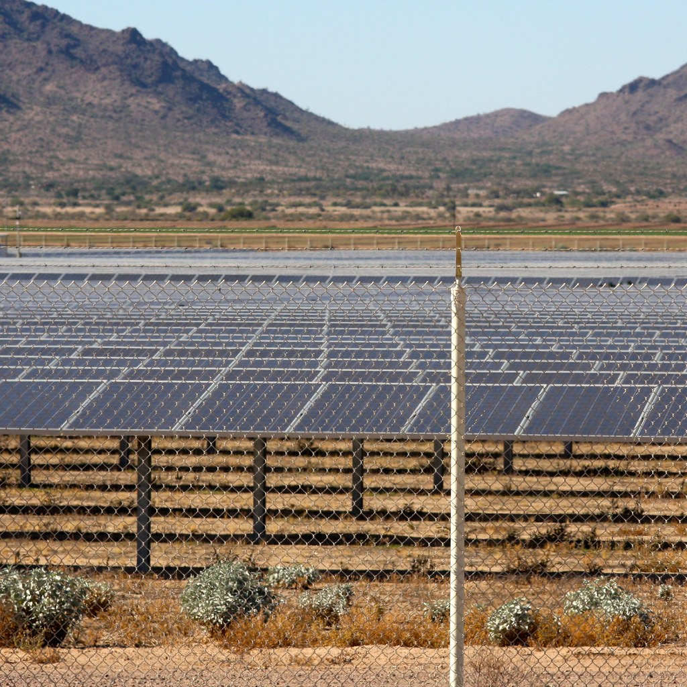

Energía Solar en Tu Camper
Dimensionamiento
- El dimensionamiento de un kit solar para furgoneta depende del consumo diario y las horas de sol disponible. — fuente: www.google.com (2024-02-01).
Baterias
- Las baterías LiFePO4 son las más recomendadas para instalaciones solares en furgonetas por su durabilidad y peso. — fuente: www.google.com (2024-02-10).
Paneles
- Los paneles solares flexibles son ideales para techos de furgonetas por su bajo peso y capacidad de adaptación. — fuente: www.google.com (2024-02-15).
Regulador
- El regulador de carga MPPT es más eficiente que el PWM para instalaciones solares en furgonetas. — fuente: www.google.com (2024-02-20).
Inversor
- El inversor de onda senoidal pura es necesario para alimentar equipos electrónicos sensibles en furgonetas. — fuente: www.google.com (2024-03-01).
Seguridad
- La instalación eléctrica en furgonetas requiere fusibles de protección y cableado dimensionado por corriente. — fuente: www.google.com (2024-03-05).
Fuentes verificadas
- https://www.google.com/search?q=baterias+lifepo4+solar+camper
- https://www.google.com/search?q=dimensionamiento+kit+solar+furgoneta
- https://www.google.com/search?q=instalacion+electrica+furgoneta+seguridad
- https://www.google.com/search?q=inversor+onda+senoidal+camper
- https://www.google.com/search?q=paneles+solares+flexibles+camper
- https://www.google.com/search?q=regulador+carga+mppt+camper
Huecos declarados: volumen de búsqueda y competencia cuantitativa son UNVERIFIED (requieren Google Trends / Search Console).